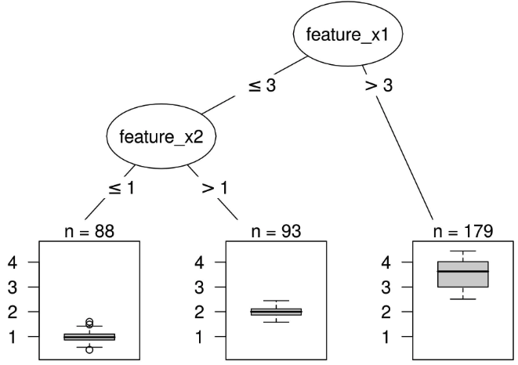
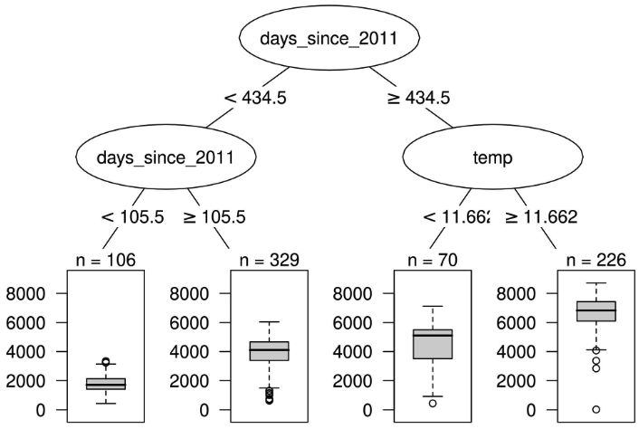
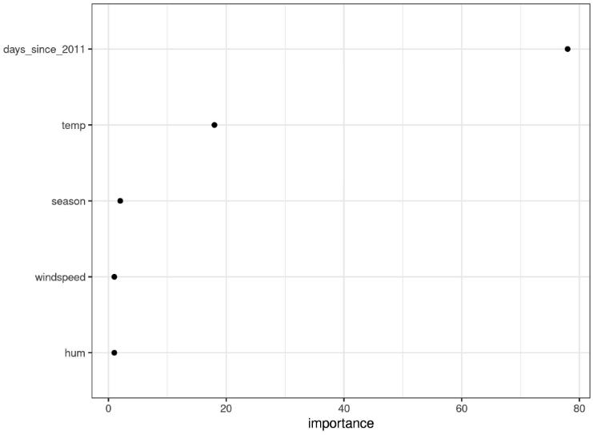

En cours de traduction.
5.4 - Arbre de décision
Les modèles de régression linéaire et de régression logistique échouent dans des situations où la relation entre les caractéristiques et le résultat n’est pas linéaire ou lorsque les caractéristiques interagissent les unes avec les autres. Il est temps de briller pour l’arbre de décision ! Les modèles basés sur les arbres divisent les données à plusieurs reprises en fonction de certaines valeurs de seuil dans les caractéristiques. En divisant, différents sous-ensembles de l’ensemble de données sont créés, chaque instance appartenant à un sous-ensemble. Les sous-ensembles finaux sont appelés noeuds terminaux ou feuilles, et les sous-ensembles intermédiaires sont appelés noeuds internes ou noeuds de division. Pour prédire le résultat dans chaque noeud feuille, on utilise la moyenne des résultats des données d’entraînement dans ce noeud. Les arbres peuvent être utilisés pour la classification et la régression.
Il existe plusieurs algorithmes qui peuvent faire croître un arbre. Ils diffèrent dans la structure possible de l’arbre (par exemple, le nombre de divisions par noeud), les critères pour trouver les divisions, quand arrêter les divisions et comment estimer les modèles simples au sein des noeuds feuilles. L’algorithme de classification et de régression par arbres (CART) est probablement l’algorithme le plus populaire pour l’induction d’arbres. Nous nous concentrerons sur CART, mais l’interprétation est similaire pour la plupart des autres types d’arbres. Je recommande le livre ‘Les éléments de l’apprentissage statistique’ (Friedman, Hastie et Tibshirani 2009) 1 pour une introduction plus détaillée à CART.

La formule suivante décrit la relation entre la sortie \(\hat{y}\) et les caractéristiques \(x\).
\[\hat{y}=\hat{f}(x)=\sum_{m=1}^Mc_m{}I_{\{x\in{}R_m\}}\]
Chaque instance tombe exactement dans un noeud feuille (=sous-ensemble \(R_m\)). \(I_{\{x\in{}R_m\}}\) est la fonction identité qui renvoie 1 si \(x\) est dans le sous-ensemble \(R_m\) et 0 sinon. Si une instance tombe dans un noeud feuille \(R_l\), la valeur prédite est \(\hat{y}=c_l\), où \(c_l\) est la moyenne de toutes les instances d’entraînement dans le noeud feuille \(R_l\).
Mais d’où viennent les sous-ensembles ? C’est assez simple : CART prend une caractéristique et détermine le point de coupure qui minimise la variance de y pour une tâche de régression ou l’indice de Gini de la distribution de classe de y pour les tâches de classification. La variance nous indique dans quelle mesure les valeurs y dans un noeud sont réparties autour de leur valeur moyenne. L’indice de Gini nous indique à quel point un noeud est “impur”, par exemple, si toutes les classes ont la même fréquence, le noeud est impur, s’il n’y a qu’une seule classe présente, il est maximalement pur. La variance et l’indice de Gini sont minimisés lorsque les points de données dans les noeuds ont des valeurs très similaires pour y. En conséquence, le meilleur point de coupure rend les deux sous-ensembles résultants aussi différents que possible par rapport au résultat cible. Pour les caractéristiques catégorielles, l’algorithme essaie de créer des sous-ensembles en essayant différentes regroupements de catégories. Une fois que le meilleur point de coupure par caractéristique a été déterminé, l’algorithme sélectionne la caractéristique à diviser qui donnerait la meilleure partition en termes de variance ou d’indice de Gini, et ajoute cette division à l’arbre. L’algorithme continue cette recherche et cette division de manière récursive dans les deux nouveaux noeuds jusqu’à ce qu’un critère d’arrêt soit atteint. Les critères possibles sont : un nombre minimum d’instances qui doivent être dans un noeud avant la division, ou le nombre minimum d’instances qui doivent être dans un noeud terminal.
5.4.1 - Interprétation
L’interprétation est simple : en partant du noeud racine, vous passez aux noeuds suivants et les arêtes vous indiquent quels sous-ensembles vous regardez. Une fois que vous atteignez le noeud feuille, le noeud vous indique le résultat prévu. Tous les bords sont reliés par “ET”.
Modèle : si la caractéristique x est [plus petite/plus grande] que le seuil c ET… alors le résultat prédit est la valeur moyenne de y des instances dans ce noeud.
Importance des caractéristiques
L’importance globale d’une caractéristique dans un arbre de décision peut être calculée de la manière suivante : parcourez toutes les divisions pour lesquelles la fonctionnalité a été utilisée et mesurez dans quelle mesure elle a réduit la variance ou l’indice de Gini par rapport au noeud parent. La somme de toutes les importances est réduite à 100. Cela signifie que chaque importance peut être interprétée comme une part de l’importance globale du modèle.
Décomposition d’un arbre
Les prédictions individuelles d’un arbre de décision peuvent être expliquées en décomposant le chemin de décision en un composant par fonctionnalité. Nous pouvons suivre une décision à travers l’arbre et expliquer une prédiction par les contributions ajoutées à chaque noeud de décision.
Le noeud racine d’un arbre de décision est notre point de départ. Si nous devions utiliser le noeud racine pour faire des prédictions, il prédirait la moyenne du résultat des données d’entraînement. Lors de la division suivante, nous soustrayons ou ajoutons un terme à cette somme, en fonction du noeud suivant sur le chemin. Pour arriver à la prédiction finale, nous devons suivre le chemin de l’instance de données que nous voulons expliquer et continuer à ajouter à la formule.
\[\hat{f}(x)=\bar{y}+\sum_{d=1}^D\text{split.contrib(d,x)}=\bar{y}+\sum_{j=1}^p\text{feat.contrib(j,x)}\]
La prédiction d’une instance individuelle est la moyenne du résultat cible plus la somme de toutes les contributions des divisions \(D\) qui se produisent entre le noeud racine et le noeud terminal où aboutit l’instance. Cependant, nous ne sommes pas intéressés par les contributions fractionnées, mais par les contributions de fonctionnalités. Une fonctionnalité peut être utilisée pour plusieurs divisions, voire pas du tout. Nous pouvons ajouter les contributions pour chacune des \(p\) fonctionnalités et obtenir une interprétation de la contribution de chaque fonctionnalité à une prédiction.
5.4.2 - Exemple
Examinons à nouveau les données sur la location de vélos. Nous voulons prédire le nombre de vélos loués un certain jour avec un arbre de décision. L’arbre appris ressemble à ceci :

La première division et l’une des deuxièmes divisions ont été réalisées avec la fonction de tendance, qui compte les jours depuis le début de la collecte de données et couvre la tendance selon laquelle le service de location de vélos est devenu plus populaire au fil du temps. Pour les jours précédant le 105ème jour, le nombre prévu de vélos est d’environ 1800, entre le 106ème et le 430ème jour, il est d’environ 3900. Pour les jours après le 430ème jour, la prévision est soit de 4600 (si la température est inférieure à 12 degrés), soit de 6600. (si la température est supérieure à 12 degrés).
L’importance de la fonctionnalité nous indique dans quelle mesure une fonctionnalité a contribué à améliorer la pureté de tous les nœuds. Ici, la variance a été utilisée, puisque la prévision des locations de vélos est une tâche de régression.
L’arbre visualisé montre que la tendance de la température et du temps a été utilisée pour les divisions, mais ne quantifie pas quelle caractéristique était la plus importante. La mesure de l’importance des caractéristiques montre que la tendance temporelle est bien plus importante que la température.

5.4.3 - Avantages
La structure arborescente est idéale pour capturer les interactions entre les fonctionnalités des données.
Les données se retrouvent dans des groupes distincts qui sont souvent plus faciles à comprendre que des points sur un hyperplan multidimensionnel comme dans la régression linéaire. L’interprétation est sans doute assez simple.
L’arborescence possède également une visualisation naturelle, avec ses nœuds et ses arêtes.
Les arbres créent de bonnes explications, comme défini dans le chapitre « Explications respectueuses de l’homme ». La structure arborescente invite automatiquement à considérer les valeurs prédites pour des instances individuelles comme des contrefactuels : « Si une caractéristique avait été supérieure/inférieure au point de partage, la prédiction aurait été y1 au lieu de y2. » Les explications de l’arbre sont contrastées, puisque vous pouvez toujours comparer la prédiction d’une instance avec des scénarios « et si » pertinents (tels que définis par l’arbre) qui sont simplement les autres nœuds feuilles de l’arbre. Si l’arbre est court, comme une à trois fentes de profondeur, les explications qui en résultent sont sélectives. Un arbre d’une profondeur de trois nécessite un maximum de trois entités et points de partage pour créer l’explication de la prédiction d’une instance individuelle. La véracité de la prédiction dépend des performances prédictives de l’arbre. Les explications pour les arbres courts sont très simples et générales, car pour chaque division, l’instance tombe dans l’une ou l’autre feuille, et les décisions binaires sont faciles à comprendre.
Il n’est pas nécessaire de transformer les fonctionnalités. Dans les modèles linéaires, il est parfois nécessaire de prendre le logarithme d’une caractéristique. Un arbre de décision fonctionne aussi bien avec n’importe quelle transformation monotone d’une fonctionnalité.
5.4.4 - Inconvénients
Les arbres ne parviennent pas à gérer les relations linéaires. Toute relation linéaire entre une caractéristique d’entrée et le résultat doit être approximée par des divisions, créant ainsi une fonction en escalier. Ce n’est pas efficace.
Cela va de pair avec un manque de douceur. De légers changements dans la fonctionnalité d’entrée peuvent avoir un impact important sur le résultat prévu, ce qui n’est généralement pas souhaitable. Imaginez un arbre qui prédit la valeur d’une maison et l’arbre utilise la taille de la maison comme l’une des caractéristiques de division. La division se produit à 100,5 mètres carrés. Imaginez l’utilisateur d’un estimateur de prix de maison utilisant votre modèle d’arbre de décision : il mesure sa maison, arrive à la conclusion que la maison a 99 mètres carrés, la saisit dans le calculateur de prix et obtient une prévision de 200 000 euros. Les utilisateurs remarquent qu’ils ont oublié de mesurer un petit débarras de 2 mètres carrés. Le débarras a un mur en pente, ils ne savent donc pas s’ils peuvent compter toute la surface ou seulement la moitié. Ils décident donc d’essayer 100,0 et 101,0 mètres carrés. Les résultats : Le calculateur de prix indique 200 000 euros et 205 000 euros, ce qui n’est pas intuitif, car il n’y a eu aucun changement de 99 mètres carrés à 100.
Les arbres sont également assez instables. Quelques modifications dans l’ensemble de données d’entraînement peuvent créer une arborescence complètement différente. En effet, chaque répartition dépend de la répartition parent. Et si une autre fonctionnalité est sélectionnée comme première fonctionnalité divisée, toute la structure arborescente change. Cela ne crée pas de confiance dans le modèle si la structure change si facilement.
Les arbres de décision sont très interprétables – à condition qu’ils soient courts. Le nombre de nœuds terminaux augmente rapidement avec la profondeur. Plus il y a de nœuds terminaux et plus l’arbre est profond, plus il devient difficile de comprendre les règles de décision d’un arbre. Une profondeur de 1 signifie 2 nœuds terminaux. Une profondeur de 2 signifie max. 4 nœuds. Une profondeur de 3 signifie max. 8 nœuds. Le nombre maximum de nœuds terminaux dans un arbre est de 2 à la puissance de la profondeur.
5.4.5 - Logiciels
Pour les exemples de ce chapitre, j’ai utilisé le module R rpart qui implémente CART (arbres de classification et de régression). CART est implémenté dans de nombreux langages de programmation, dont Python. On peut soutenir que CART est un algorithme assez ancien et quelque peu obsolète et il existe de nouveaux algorithmes intéressants pour ajuster les arbres. Vous pouvez trouver un aperçu de certains modiles R pour les arbres de décision dans la vue des tâches CRAN d’apprentissage automatique et d’apprentissage statistique sous le mot-clé « Partitionnement récursif ». En Python, le module imodels fournit divers algorithmes pour faire croître les arbres de décision (par exemple, ajustement gourmand ou optimal), élaguer les arbres et régulariser les arbres.
Notes de bas de page
Friedman, Jerome, Trevor Hastie, and Robert Tibshirani. “The elements of statistical learning”. hastie.su.domains/ElemStatLearn (2009).↩︎